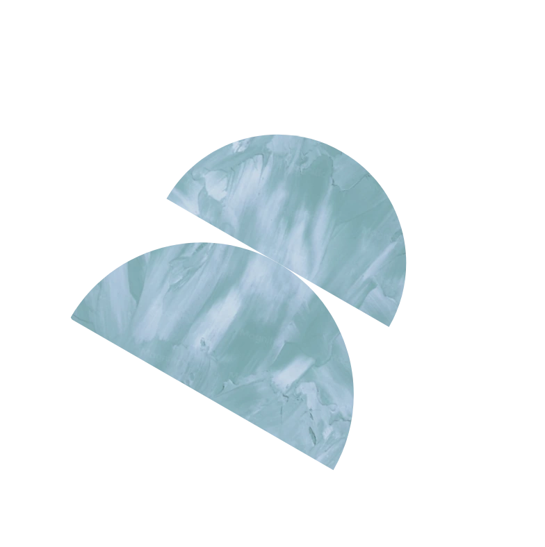
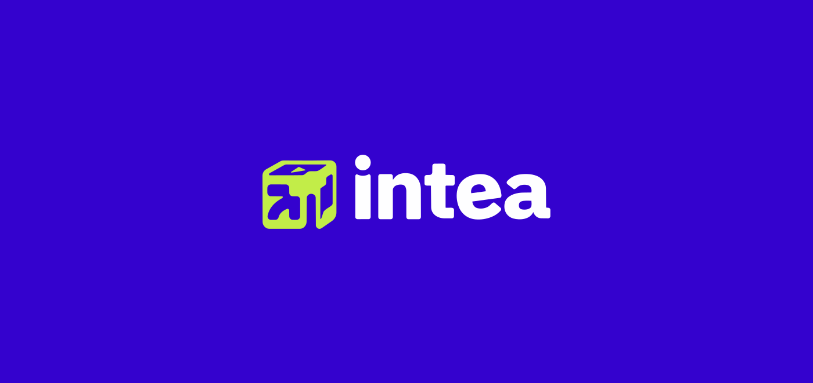
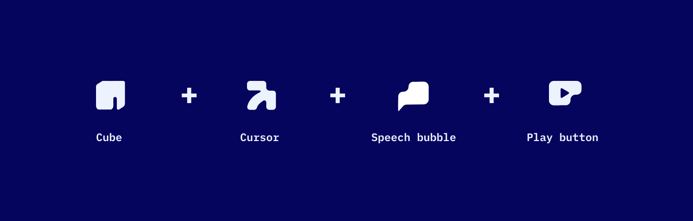
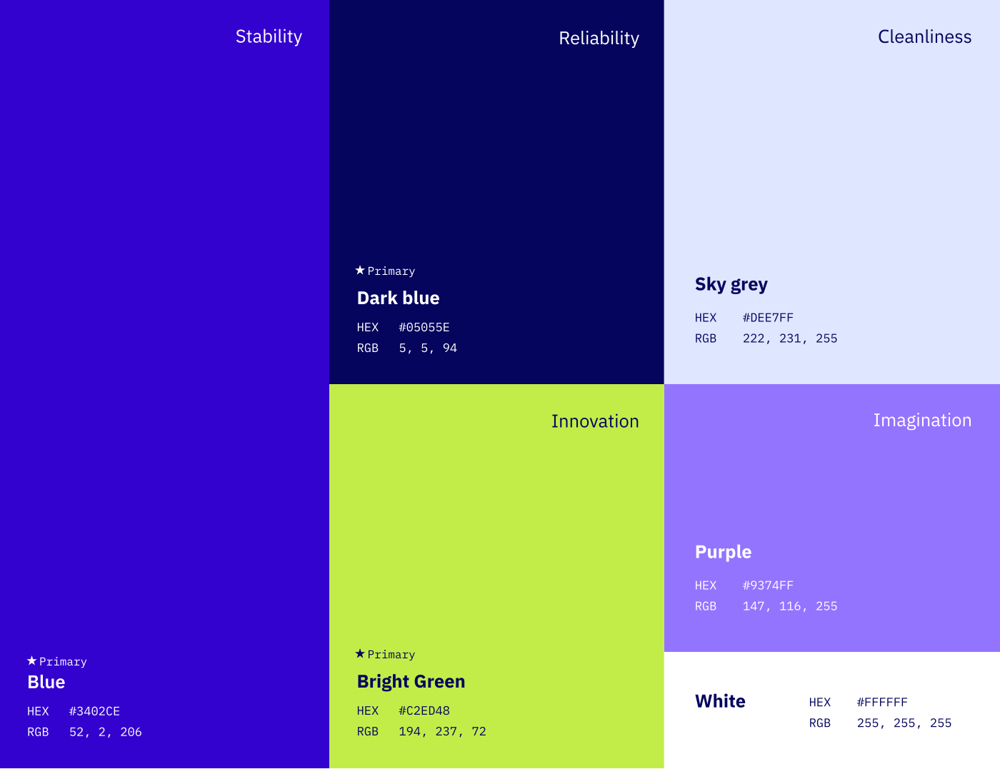
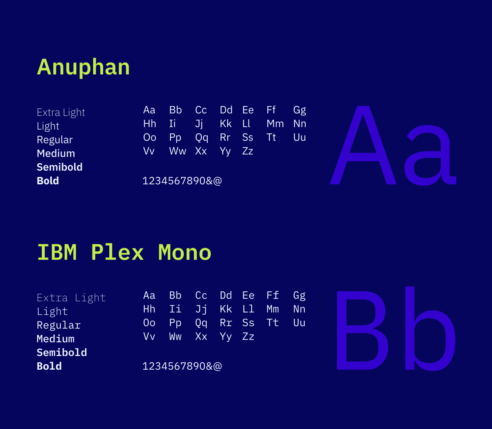
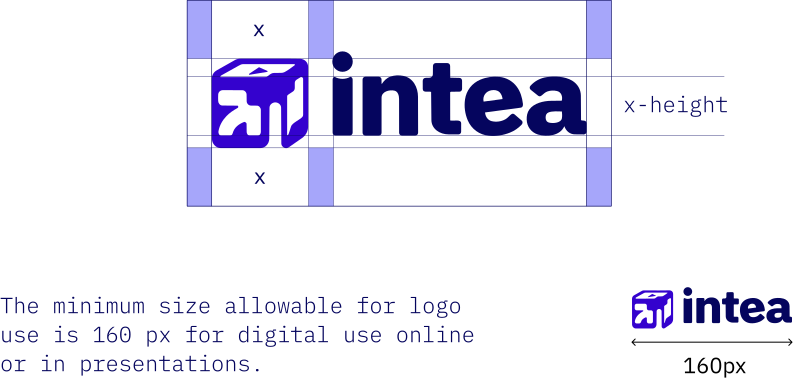
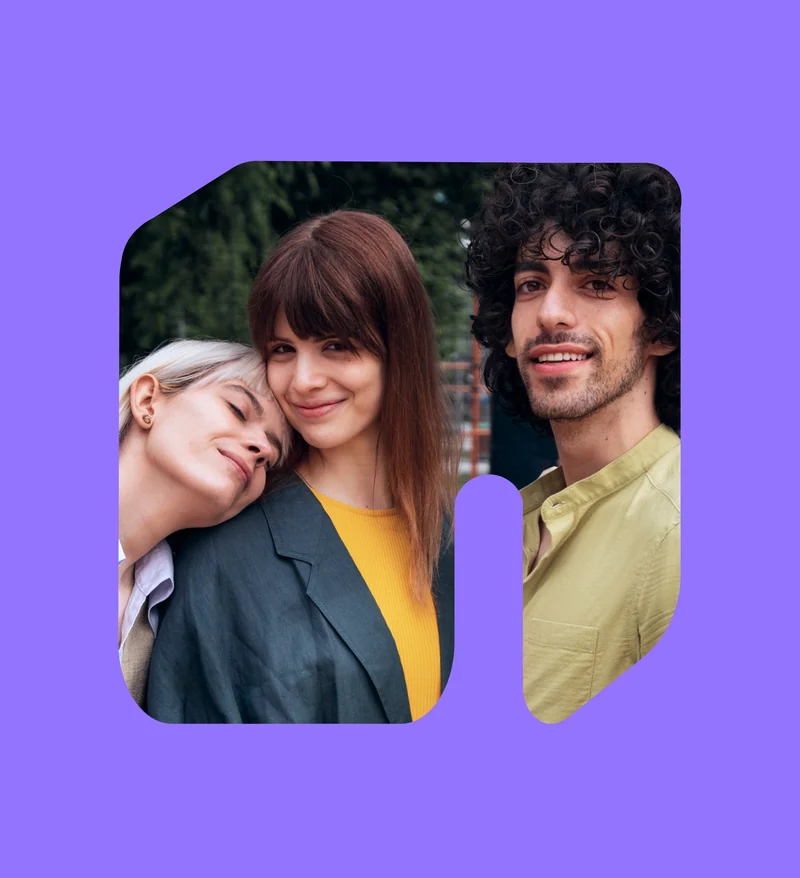
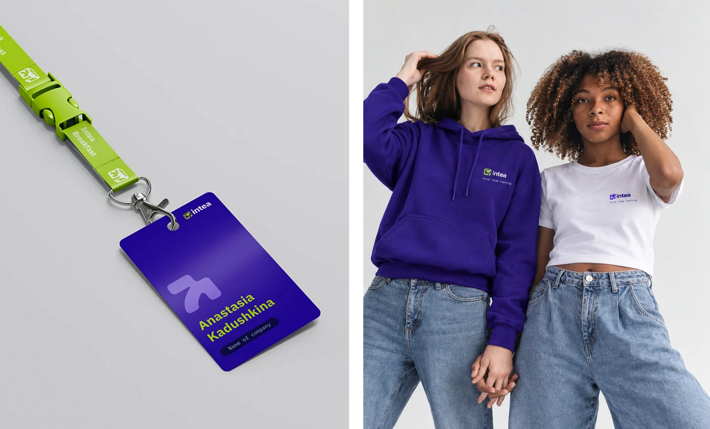
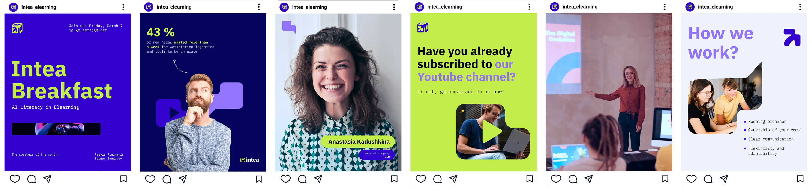

INTEA
A new brand identity concept for an eLearning company in Riga.
- Concept
- Logo
- Brand guidelines
- Social media
INTEA designs digital courses for clients across Latvia and Europe. This concept gives the company a new brand identity: a logo, brand guidelines and a social media post system.
The logo is a cube, a symbol of stability, intelligence and connection. Its sides carry a cursor for online learning, a speech bubble for communication and a play button for video. Next to it sits a sans‑serif wordmark with a slightly quirky character: its rounded letters add warmth, and its weight matches the mark.
Shapes from the logo double as photo frames. Framing photos this way keeps faces at the centre, and every layout stays recognisable even without a logo.







